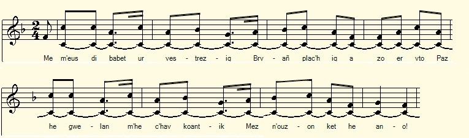
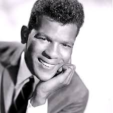

An euzhvil
Le monstre
The Monster
Chant collecté par Théodore Hersart de La Villemarqué
dans le 2ème Carnet de Keransquer (pp. 70-71).

Mélodie
Arrangement Christian Souchon (c) 2019
|
A propos de la mélodie Inconnue. Remplacée par "Il faut savoir se consoler ", tiré de "La Paroisse bretonne de Paris" de l'Abbé François Cadic, mars 1924. A propos du texte Cette satire pleine de méchanceté, imite tout unepoésie galante dont le poème "Yvonne de Kerizel" composé par François-Marie Luzel fournit un exemple. On le trouvera ci-après. Le thème de la femme laide a fait le succès du chanteur de rock américain Jimmy Soul (1942-1988) qui proclamait: "If you wanna be happy for the rest of your life / Never make a pretty woman your wife /So for my personal point of view / Get an ugly girl to marry you." |
About the tune Unknown. Replaced by "You have to know how to console yourself", taken from "La Paroisse bretonne de Paris" by Abbé François Cadic, March 1924. About the lyrics: This satire full of wickedness, imitates a type of gallant poetry of which the poem "Yvonne of Kerizel" composed by François-Marie Luzel provides an example. It will be found below. The theme of the ugly woman made the success of the American rock singer Jimmy Soul (1942-1988) who proclaimed: "If you wanna be happy for the rest of your life / Never make a pretty woman your wife /So for my personal point of view / Get an ugly girl to marry you." |
|
BREZHONEK p. 70 Le monstre Son a-enep Loiza Simon,de Kervenis Langonnet, 29 ans 1. Me m'eus dibabet ur vestrezig, Bravañ plac'hig a zo er vro, Pa'z he gwelan,m'he c'hav koantik, Med n'ouzon ket he anv. 2. He muzeloù zo hir ha blevek, Hañval awalc'h d'ouzh re ur penn-moch Koantik, ha mar on gwall-brezeger, Eskuz a c'houlenn diganeoch. 3. Ma mestrezik he-deus (deveus) divskouarn Hag ra dezhi kalz a enor Neb a weloc'h hag a zellorc'h Vel ema div voro-kilhor [?] 4. Hag hec'h analig a zo ken dous Evel pa vefe bet meskad He daoulagad zo ken minon Vel dar re an tal garz taeraet 5. He divjotik a zo ruz ha gwenn, Laran ket deoch evel dar roz Evel en tonelloù talbennet An dud a lar ar gwin zo kozh. 6. He chorf a zo houstouilh-dihoustouilh, He zreid a zo pigos fagod [?] [Dans la marge droite verticalement] Ma laka d'arc'hen e votoù Bremañ vo ret din-me chafod p. 71 / 37 7. Un troad dezhi zo evel dar voull-gilhioù Un all a zo 'vel dul loa goat 8. Hag hi dentigoù a zo renket Laran ket deoch vel perchad pesk Lod a zo hir, lod a zo berroch Hag ar berrañ keit ha ma bez [?] 9. Komzit ket din demeus he faotoù, Rak faot he-deus a-dreñv hag araok Ha mar d'eo arc'hant en he bosoù, Me a zo sur da gaout ma lod 10. Setu aze rach an holl ziazoù Pehini he-deuz ma mestrez. Gave ket din e ven enebet Hag e daolfe dour din barzh ma laezh. KLT gant Christian Souchon |
TRADUCTION FRANCAISE p. 70 Le monstre Chanson contre Louise Simon,de Kervenis Langonnet, 29 ans 1. Celle que j'aime est de ce canton La plus ravissante personne, Je m'adonne à sa contemplation, Sans savoir comment on la nomme. 2. Ses lèvres s'ornent d'un fort duvet, Comme l'on en voit chez les truies Divin! Si c'est là la calomnier, Pardon, toute la compagnie!. 3. Rendre un honneur mérité l'on doit Aux oreilles de mon élue. Elles évoquent à qui les voit Les deux poignées d'une charrue 4. A du beurre rance fait penser Votre douce haleine, ma chère. Et vos yeux sont mignons à croquer Comme ceux d'un jars en colère. 5. Ses joues teintées de rouge et de blanc, N'évoquent pourtant pas la rose Mais les tonneaux pansus, où dit-on Il faut que le vin vieux repose. 6. Elle a le corps couvert d'oripeaux Et des pieds en bec de bombarde [Dans la marge droite verticalement] Et pour lui chausser ses pieds si beaux Il me faut un échafaudage p. 71 / 37 7. En boule à quilles est son pied droit En cuiller en bois est le gauche 8. Ses quenottes pendues avec soin Comme les poissons à la poutre, Les unes longues d'autres bien moins, Inexistantes les plus courtes 9. Ne me parles pas de ses défauts, Elle en a, je sais, à revendre. Mais s'il est de l'or caché dessous Ses bosses je peux y prétendre. 10. Voici donc toutes les qualités Qu'on trouve chez celle que j'aime. Ne croyez pas que j'en sois fâché: Je ne veux point d'eau dans ma crême. Traduction: Christian Souchon (c) 2019 |
ENGLISH TRANSLATION p. 70 The monster Song against Louise Simon, of Kervenis near Langonnet, 29 years old 1. I have chosen as my sweetheart The prettiest girl in these parts, In looking at her I rejoice, But I don't know her name: my choice. 2. With hairs are adorned her broad lips, As are the muzzles of the pigs So nice! If I'm slanderering her Oh, I do apologize, sir 3. And she has very special ears They do great honour to my dear Remind whoe'er sees them somehow Of the two handles of a plow. 4. Her sweet breath is not much better Than the smell of rancid butter And her eyes are hardly milder Than those of an angry gander. 5. Her cheeks are tinged with red and white, But they are not a rose alike, Look like the hooped casks where rest The wines that are meant to age best. 6. Her whole body is like her cheeks: Her feet shaped like oboe beaks [In the right margin vertically] When I help her put on her shoes I need props to insert her toes p. 71/37 7. A bowling ball is her right foot And the left one a spoon of wood. 8. Her teeth are tidy, as a whole: Look like fish hanging from a pole Some of them long, some of them short, Some others have left their resort. 9. Don't talk to me about her faults, Which she has to spare, a full vault. But if gold is hidden under Her bumps I shall claim it later. 10. So you see: of high quality Is the one I love so fondly. To change her would be a bad scheme. I don't want water in my cream. Traduction: Christian Souchon (c) 2019 |
Ivona Kerizel
Poème de François-Marie Luzel (1821-1895) publié dans "Bepred Breizhad", Editions J. Haslé , Morlaix, 1865
|
BREZHONEK 1. E Kerizel zo ur plachig, Hech anv Mona, pe Monig : Er vro na gavfet ket he far ; A-greiz ma chalon me he char. 2. Heñvel ez eo eus un oanig, A lamm e-kichen e vammig, Da viz mae, e-touez ar bleunioù Hag ar raden, barzh ar pradoù. 3. He blev a zo hir ha melen, Hag he chalonig ken laouen ! He zal a zo un hanter loar ; Dan Aelez, me gred, ez eo choar. 4. He sell zo tomm ha birvidik, He mouezh vel hini an eostig, Pa gan, en noz, kichen he neizh, Er gwez uhel, e koadoù Breizh. 5. He divjod a zo ruz ha gwenn, He muzelloù, div gerezenn, Ken fresk, ken koantik ha ken flour, Ma teu en hon genoù an dour ! 6. He chorf zo ken mistr ha ken moan ! Ha vel al lili ez a glan ; Ken bihan, ken skañv eo he zroad, Ken lemm ha ken glas he lagad ! 7. O ! bravañ maz eo da welet, Dar sulioù, pa ve kempennet, Ur choef dantelezh war he fenn, Ur groazig archant n he cherchenn ! 8. He dent a zo vel ur bagad Oanigoù gwnn e-barzh ar prad, Ha gant hech alan zo chwezh-vat, Vel ar gwezvoud, pe r spern, er choad. 9. Nann, en holl barrozioù en-dro, Nen deus ket un all barzh ar vro, Ken koant ha ken fur ha Monig, Monig Kerizel, ma dousig. 10. Ar Person kozh hon badezas Neuze vat hon euredo choazh, Dirak Doue hag ar Werchez, Ha Sent hon bro hag an Aelez ! |
TRADUCTION FRANCAISE 1. A Kerizel vit une fille Qu'on nomme Yvonne la gentille : Nulle ne peut s'y comparer; De tout mon coeur je l'aime . 2. Yvonne est semblable à l'agneau Qui saute au milieu du troupeau Au mois de mai parmi les fleurs, Les prés et la fougère. 3. Yvonne a de longs cheveux blonds, Un coeur aussi joyeux que bon! Un croissant de lune son front; Elle est la soeur des anges. 4. Son regard vif et pénétrant, Rossignol, sa voix c'est le chant!, Que tu fais entendre en ton nid, Dans la forêt bretonne. 5. Ses joues ont une teinte exquise Et ses lèvres sont deux cerises, Si fraîches, qu'on les croquerait, L'eau me vient à la bouche! 6. Son corps est si svelte et si fin Tel le lis ornant le jardin ; Ses petits pieds sont si légers Ses yeux bleus si limpides! 7. Le dimanche c'est le grand jour, Car à ses plus charmants atours Elle ajoute une croix d'argent, Sa coiffe de dentelle! 8. Ses demts sont un petit troupeau Dans la prairie de blancs agneaux Sa bouche exhale des parfums: Chèvrefeuille, aubépine 9. Dans les paroisses du canton, Nul être n'est aussi mignon , Que mon Yvonne Kerizel, Que je nomme ma douce. 10. Le recteur qui nous baptisa Un jour, c'est sûr, nous mariera, Devant la Vierge et le Bon Dieu, Et nos saints et les anges! |
ENGLISH TRANSLATION 1. In Kerizel lives a girl Whose name is Mona or Monig (Yvonne): No one can compare to her; With all my heart I love her. 2. She is like a lamb Who jumps near its mother In May among flowers And fern in the meadows. 3. She has a long blond hair, And her heart is so happy! Her forehead looks like a crescent moon; I believe she is the sister of angels. 4. Her eyes are hot and burning; Her voice is like the song the nightingale That sings at night near its nest, A-top of the tree in the woods of Brittany. 5. Her cheeks are hued with red and white And her lips are two cherries So fresh, so pretty, so luscious. O water comes to my mouth! 6. Her body is so slender and slim, As bright as a lily. Her little feet are so nimble, Her blue eyes so penetrating! 7. But she looks her best On Sundays, when she dresses up With her lace headdress And a silver cross hanging on her neck. 8. Her teeth are a small flock Of white lambs in the meadow; Her breath has fragrances Like honeysuckle or wood hawthorn. 9. No, in the surrounding parishes, No one else compares to her, No one is as pretty and wise as Monig Monig of Kerizel, my beloved. 10. The old vicar who baptized us, One day, for sure, will marry us, Before God and the Virgin, The saints of Brittany and the angels. |

Jimmy Soul